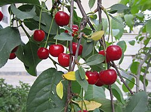

Višeň obecná nebo pouze višeň (Prunus cerasus) je ovocný strom z čeledi růžovitých (Rosaceae). Popis Višeň obecná dorůstá výšky okolo 10 m. Koruna stromu je kuželovitá až kulovitá. Větvičky jsou na konci převislé, listy jsou střídavé, lesklé a jemně vejčité, vypadají skoro stejně jako u třešně. Bílé květy rostou ve svazcích. Plody jsou tmavočervené peckovice. Kvete začátkem května. Višeň kvete a plodí převážně na jednoletém dřevě, které po odplození vyholuje. Proto vždy vyžaduje řez po sklizni. Višně, které se nejčastěji pěstují, jsou děleny do čtyř hlavních skupin:[1] amarelky – jsou světle zbarvené višně, lehce zploštělé, mají bezbarvou šťávu. Jejich chuť je nakyslá, hlavní odrůdy jsou Amarelka Královská a Favorit. kyselky – jsou tmavě zbarvené višně srdcovitého nebo sférického tvaru. Mají tmavou šťávu a jejich chuť je většinou kyselá až natrpklá. Kvůli chuti jsou vhodné spíše na zpracování v kuchyni. Nejznámější odrůdou kyselek je Morela pozdní. skleněnky (skleňovky) – jsou světle zbarvené višně, chuť nasládlá. sladkovišně – jsou tmavé višně, s barvící šťávou. Jejich chuť je navinule sladká. Hlavní odrůdou je Sladkovišeň raná.